Conference series and activities
Seminars
The AUASS, in cooperation with many astronomical bodies, held several seminars focusing on jurisprudential and astronomical issues, and the attempt to reach radical solutions in issues of concern to the Arab and Islamic worlds.
- The Impact of Al-Ajeery’s Work in Arab Astronomy” seminar
- The International Day for Arab Women and Girls in Science and Space” seminar.
- The Crescent of Ramadan: Between Jurisprudential Vision and Astronomical Calculations
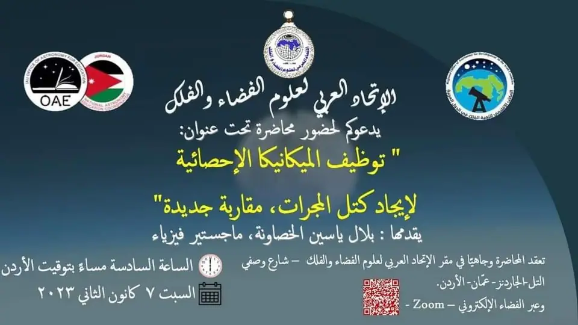
Lecture titled "Utilizing Statistical Mechanics to Determine Galaxy Mass: A New Approach"
Bilal Al-Khasawneh – 7/1/2023
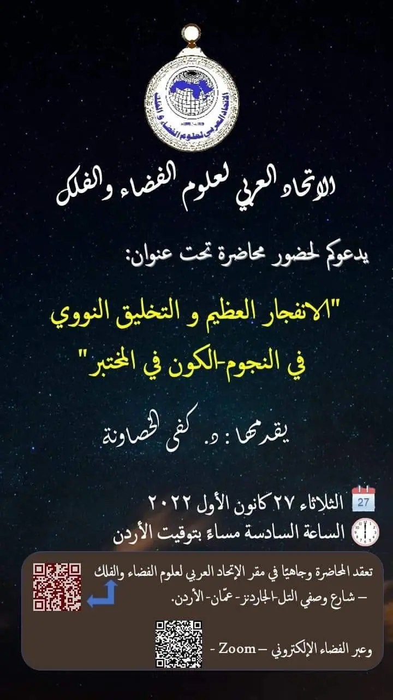
Lecture titled "The Big Bang and Nuclear Synthesis in Stars – The Universe in the Laboratory"
Dr. Kafa Al-Khasawneh – 27/12/2022
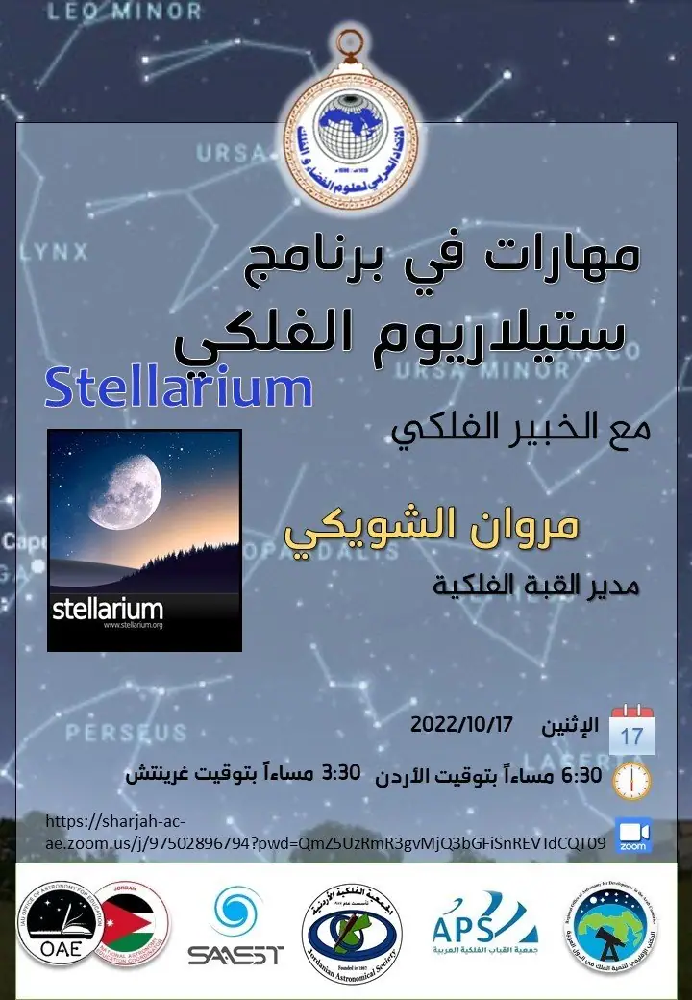
Skills in Stellarium Astronomy Software workshop
Marwan Shwaiki – 17/10/2022
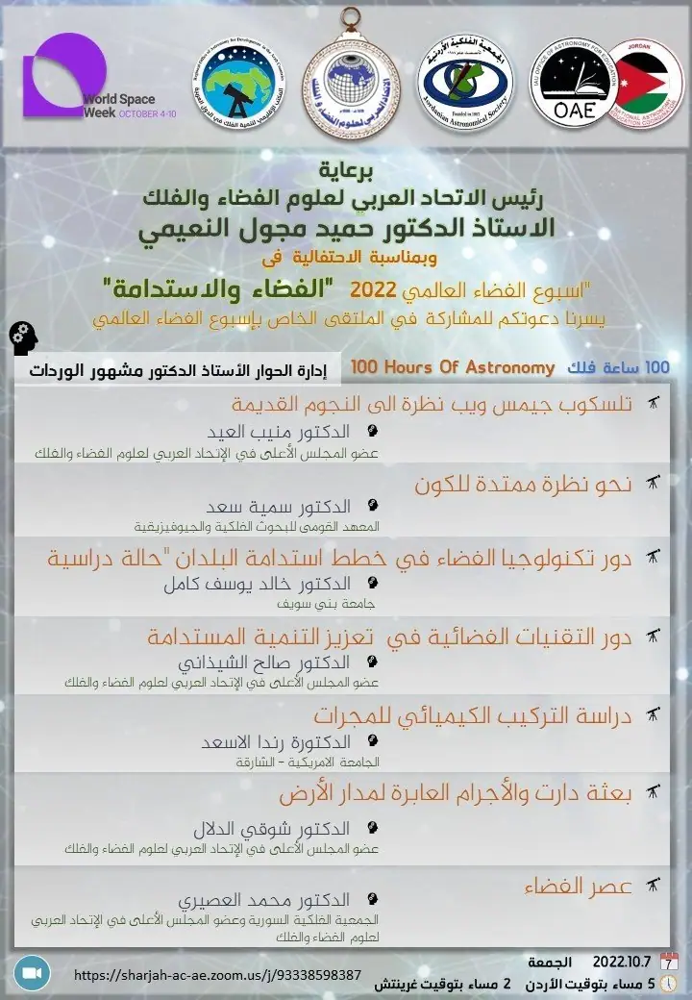
"World Space Week 2022" event: "Space and Sustainability"
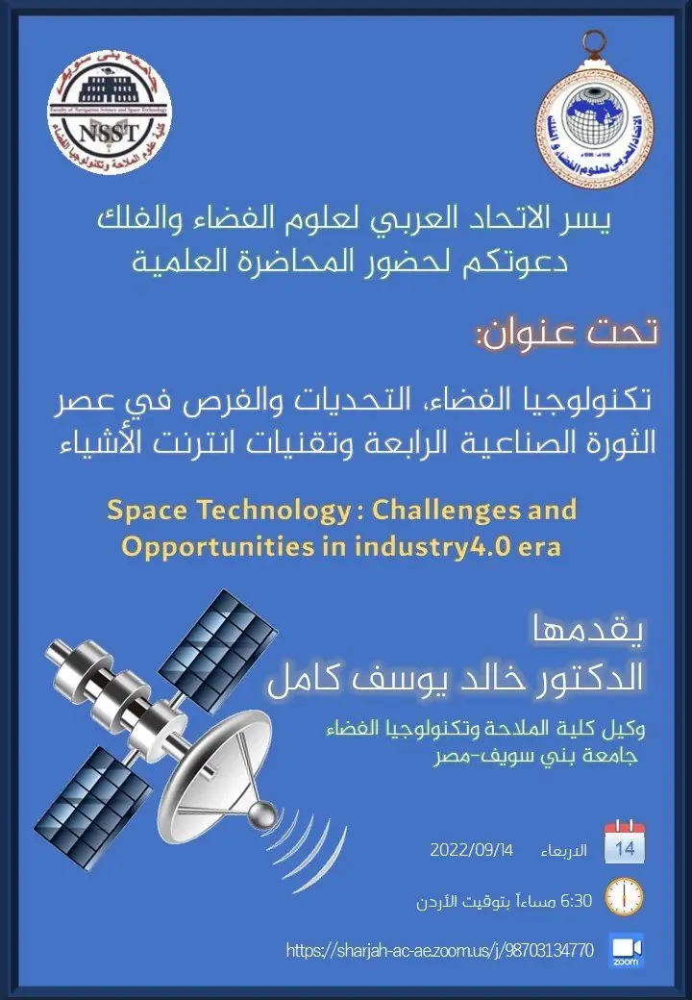
Lecture titled "Space Technology: Challenges and Opportunities in the Fourth Industrial Revolution Era and Internet of Things Technologies"
Dr. Khaled Youssef Kamel – 14/9/2022
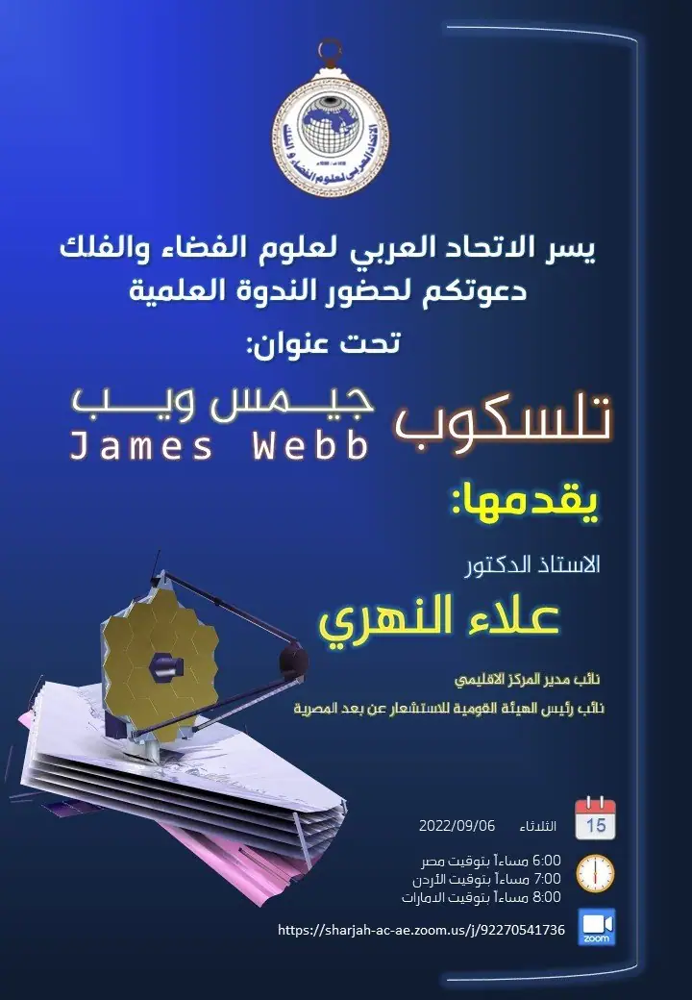
Scientific seminar titled: "James Webb Space Telescope" presented by Professor Dr. Alaa El Nahry
6/9/2022
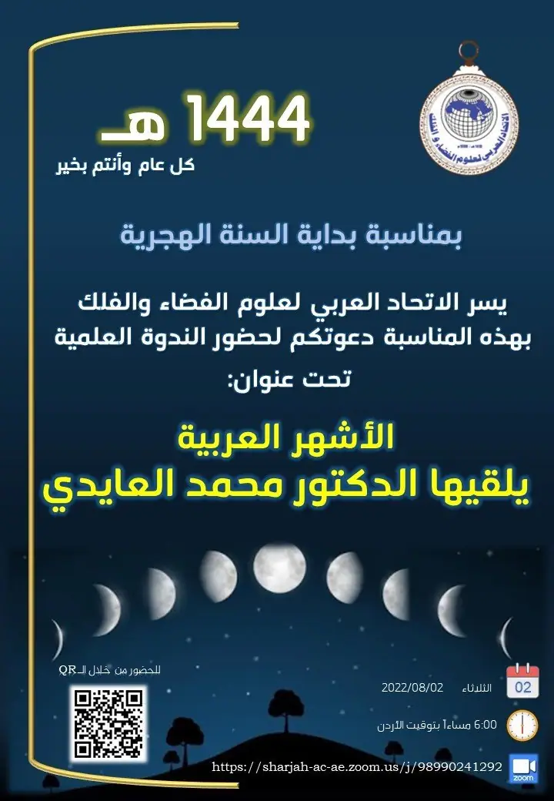
Scientific seminar titled: "The Arabic Lunar Months"
Dr. Mohammad Al-Aydi – 2/8/2022
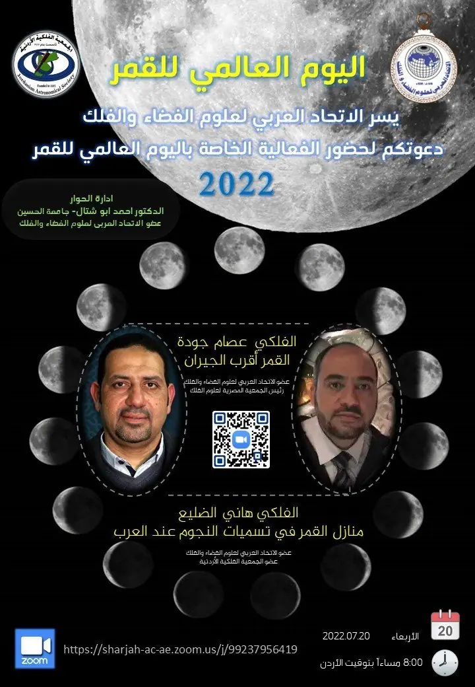
World Moon Day
20/7/2022 (astronomer Essam Joudeh and astronomer Hani Al-Dhulaie)
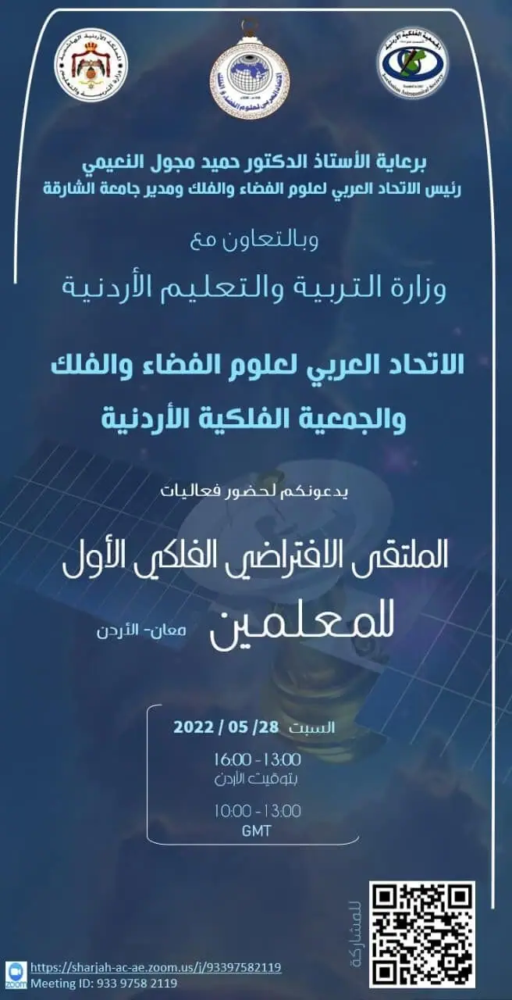
The First Virtual Astronomy Forum for Teachers (Ma'an, Jordan)
Saturday 28/5/2022
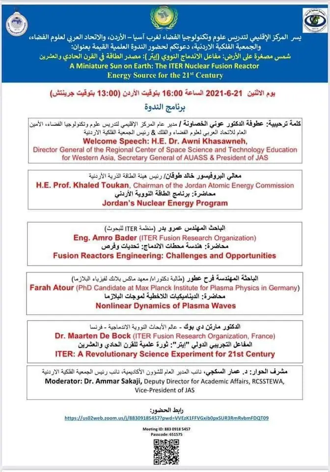
Seminar titled "Sun on Earth: ITER Nuclear Fusion Reactor - Energy Source of the 21st Century"
21/6/2021
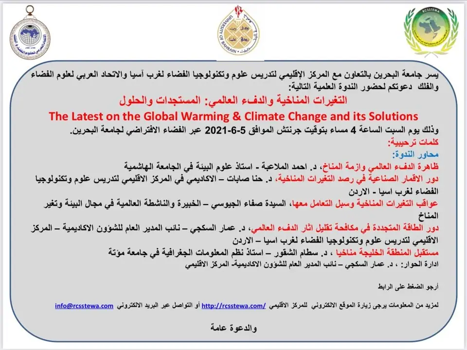
Scientific seminar "Climate Change and Global Warming: Updates and Solutions"
5/6/2021
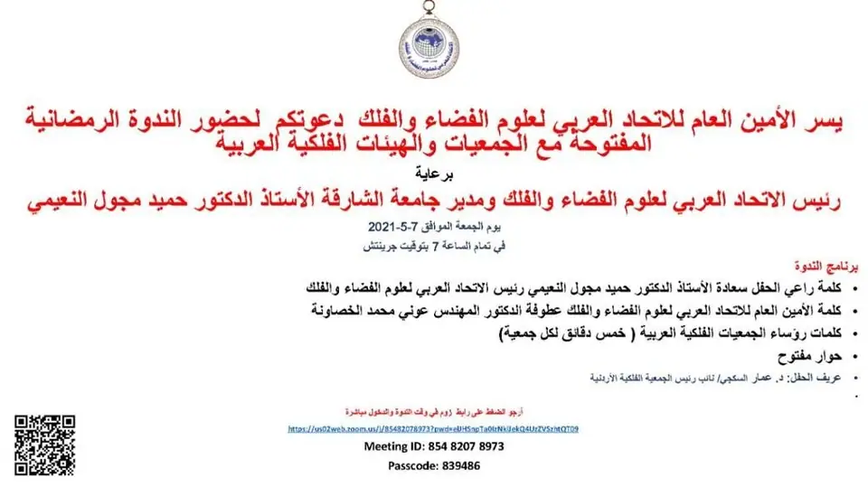
Open Ramadan Seminar with Arab Astronomical Associations and Organizations
7/5/2021
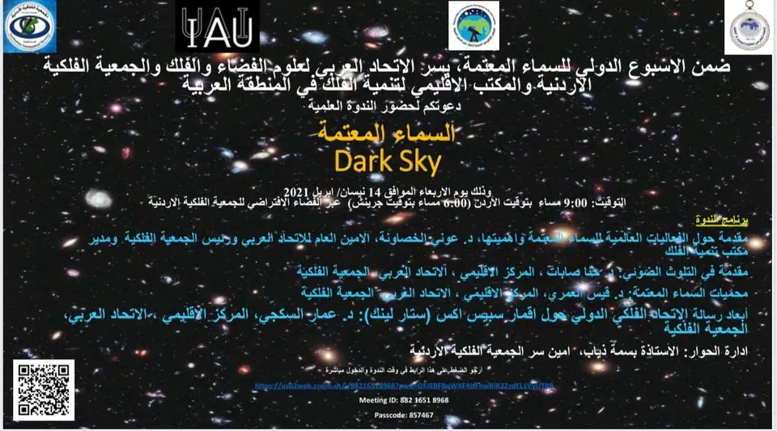
International Dark Sky Week: Scientific Seminar on Dark Skies
14/4/2021
Seminar on the Hijri Calendar in Light of Scientific Data
The Islamic Organizations Union in France, in collaboration with the European Council for Fatwa and Research and the Union of Islamic Organizations in Europe, organized the “European Seminar on the Islamic Calendar” held in Paris, France on 12th – 13th Rabi Al-Awwal, 1433 AH (4th – 5th February, 2012 CE). Many works and research papers were discussed by a group of scholars in jurisprudence and astronomy, focusing on the Hijri calendar and the beginnings of lunar months in light of modern scientific and technological data, aiming to establish a unified mechanism for the start of months. The participants concluded with several recommendations and reached a consensus in jurisprudential astronomy to resolve inter-differences. For further recommendations, click here.
Seminar on Developing a Calendar for European Countries Located between Latitudes 48-66 Degrees
A seminar was held at the Islamic Center in Brussels on 25th – 26th Sha’ban, 1430 AH (21st – 22nd May, 2009 CE) to prepare a calendar for European countries located between latitudes 48-66 degrees north and south. The seminar was attended by several jurists, astronomers, and Muslim leaders from some European countries. On 10th Ramadan, 1430 AH (corresponding to 10th August, 2009 CE), a special committee was convened at the headquarters of the Muslim World League in Mecca to follow up on the recommendations made by the scholars regarding the timing of Fajr and Isha prayers in those regions. For further recommendations, click here.
The Second Experts Meeting to Study the Islamic Calendar
Over two days, on 15th – 16th Shawwal, 1429 AH (corresponding to 15th – 16th October, 2008 CE), the Islamic Educational, Scientific and Cultural Organization (ISESCO), the World Islamic Call Society, and the Moroccan Association of Astronomy held the Second Experts Meeting to develop and study the Islamic calendar. The meeting aimed to address the following research topics:
The legal and jurisprudential aspects of regulating the lunar months.
The experiments and systems currently in place or proposed for this purpose.
The conditions for the validity of the calendar. For further recommendations, click here
The First Experts Meeting to Study Moon Sighting
Over two days, on 17th – 18th Shawwal, 1427 AH (corresponding to 9th – 10th November, 2006 CE), the Islamic Educational, Scientific and Cultural Organization (ISESCO), the World Islamic Call Society, and the Moroccan Association of Astronomy held a meeting for experts to study moon sighting among Muslims. The meeting aimed to address the following research topics:
The legal and jurisprudential aspects of regulating the lunar months.
The experiments and systems currently in place or proposed for this purpose.
Modern approaches to regulating the lunar months. For further recommendations, click here
Seminar on Determining the Prayer Times for Fajr and Isha
A seminar on determining the prayer times for Fajr and Isha was held at the National Institute for Astronomical and Geophysical Research in Helwan, Egypt, on 23rd Dhu al-Hijjah 1420 AH (corresponding to 19th March 2000 CE). Several research papers were presented, discussing the significant discrepancies between the recorded prayer times and those newly inferred. Additionally, various specialized papers were presented. At the end of the seminar, the researchers issued several recommendations, emphasizing the importance of continuing research within the scientific and technological developments in this regard. For further recommendations, click here.
Seminar on Crescent Sighting, Prayer Times, and Astronomical Techniques
The Kuwait Scientific Club organized a seminar on crescent sighting, prayer times, and astronomical techniques from 21st to 23rd Rajab 1409 AH (corresponding to 27th February to 1st March 1989 CE). The seminar resulted in several recommendations, including:
The observation of the crescent in one country should be followed if confirmed.
Crescent sighting is the primary method for determining the beginning of the month, with astronomical calculations as a supportive tool.
Colleges of Sharia and Law should prioritize teaching astronomical sciences. For further recommendations, click here
The Seventeenth Ordinary Session of the European Council for Fatwa and Research
Event : Sheikh Salman bin Jaber Al Thani delivers a lecture on the sighting of the Ramadan crescent between astronomy and Sharia for the Jordanian judiciary
Date : 01/07/2012
location : Jordan
Event : National Festival of Popular Astronomy 11
Date : 2012/10/6-4
location : Algeria
Event : Tenth Arab Conference on Astronomy and Space
Date : 2012/2/8-5
location : Muscat, Oman
Event : Celebration of the 25th anniversary of the establishment of the Jordanian Astronomical Society
Date : 17/09/20-12
location : Muscat, Oman
Event : Miracles in the Sky and the Universe Jordan Amman
Date : 13/04/20-13
location : Amman, Jordan
Event : National Festival of Popular Astronomy 12
Date : 2013/10/5-3
location : Algeria
Event : Oman Astronomy and Space Conference
Date : 10/12/20-13
location : Muscat, Oman
Event : Sixth Islamic Astronomy Conference Jordan Amman
Date : 2014/3/21-18
location : Amman, Jordan
Event : Scientific Seminar Astronomy and Sharia in Welcoming the Ramadan Crescent Jordan Amman
Date : 25/06/20-14
location : Amman, Jordan
Event : Preparatory meeting for participants in the scientific program (astronomers) Qatar
Date : 16/08/2014
location : Amman, Jordan
Event :Seventh Arab Conference of Experts on Geographical Names Jordan Amman
Date : 2014/11/13-11
location : Amman, Jordan
Event :National Festival of Popular Astronomy 13 Algeria
Date : 2014/9/27-25
location : Amman, Jordan
Event :Celebration of the 27th anniversary of the establishment of the Jordanian Astronomical Society Jordan Amman
Date : 30/10/2014
location : Amman, Jordan
Event :Eleventh Arab Conference on Astronomy and Space United Arab Emirates Sharjah
Date : 2014/12/11-8
location : Sharjah, United Arab Emirates
Event :Sheikh Salman bin Jaber Al Thani delivers a lecture on the sighting of the Ramadan crescent between astronomy and Sharia for the Jordanian judiciary
Date : 01/07/2012
location : Jordan
Event :National Festival of Popular Astronomy 11
Date : 2012/10/6-4
location : Algeria
Event :Tenth Arab Conference on Astronomy and Space
Date : 2012/2/8-5
location : Amman, Jordan
Event :Celebration of the 25th anniversary of the establishment of the Jordanian Astronomical Society
Date : 17/09/20-12
location : Muscat, Oman
Event :Miracles in the Sky and the Universe Jordan Amman
Date : 13/04/20-13
location : Amman, Jordan
Event :National Festival of Popular Astronomy 12
Date : 2013/10/5-3
location : Algeria
Event : Oman Astronomy and Space Conference
Date : 10/12/20-13
location : Muscat, Oman
Event : Sixth Islamic Astronomy Conference Jordan Amman
Date : 2014/3/21-18
location : Amman, Jordan
Event : Scientific Seminar Astronomy and Sharia in Welcoming the Ramadan Crescent Jordan Amman
Date : 25/06/20-14
location : Amman, Jordan
Event : Preparatory meeting for participants in the scientific program (astronomers) Qatar
Date : 16/08/2014
location : Amman, Jordan
Event : Seventh Arab Conference of Experts on Geographical Names Jordan Amman
Date : 2014/11/13-11
location : Amman, Jordan
Event : National Festival of Popular Astronomy 13 Algeria
Date : 2014/9/27-25
location : Amman, Jordan
Event : Celebration of the 27th anniversary of the establishment of the Jordanian Astronomical Society Jordan Amman
Date : 30/10/2014
location : Amman, Jordan
Event : Eleventh Arab Conference on Astronomy and Space United Arab Emirates Sharjah
Date : 2014/12/11-8
location : Sharjah, United Arab Emirates
Migrated from the AUASS website as published, with the formatting tidied and personal emails and phone numbers removed.